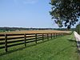

fence

Definition: A fence is a structure that encloses an area, typically outdoors, and is usually constructed from posts that are connected by boards, wire, rails or netting. A fence differs from a wall in not having a solid foundation along its whole length.Alternatives to fencing include a ditch (sometimes filled with water, forming a moat).
Source: Wikipedia
Wikipedia Page
Wikidata Page
Occurs in: